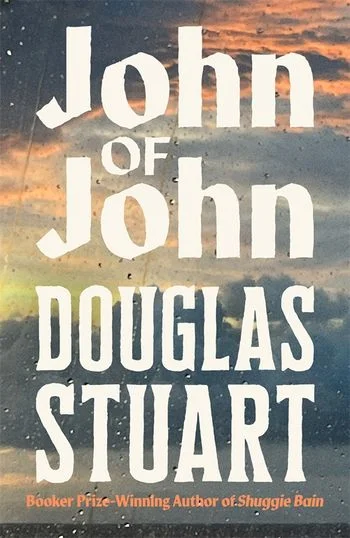

John of John by Douglas Stuart: A Review
Douglas Stuart’s third novel arrives this week. John of John, published in the UK by Picador on 5 May 2026, has already been chosen as Oprah’s Book Club pick for May, named on every ‘most anticipated’ list of the year, and reviewed in the American press as Stuart’s ‘finest work yet.’ It’s also a 400-page novel about a young man returning to his father’s croft on the Isle of Harris in the 1990s. Both of these things are true.

If you came to Stuart through Shuggie Bain in 2020, then Young Mungo in 2022, you know the shape of his project. A working-class Scottish boy with a mother who can’t quite hold herself together. A father absent in some way the boy can’t fix. A community that watches and judges. A body that betrays what the boy is supposed to be. John of John keeps almost all of that. What changes is the sky.
Glasgow tenements give way to Hebridean light
The first two novels were Glasgow novels. Tenements and schemes, the closed ceiling of poverty pressing down on the children inside it. John of John moves the camera 300 miles north and west, to the Isle of Harris in the Outer Hebrides. The light is different there. The wind is different. The privacy is different too, because on a small island where everyone’s surname is Macleod and everyone speaks Gaelic, there’s no anonymity to disappear into.
John-Calum Macleod, called Cal, is the third young queer man Stuart has built a novel around. He’s just come home from art school in Edinburgh, broke, with little to show for the four years away. His father John, a sheep farmer and weaver who serves as lay preacher in the local Free Presbyterian church, has summoned him. Cal’s grandmother Ella is unwell. Or so the father says. When Cal arrives, Ella seems alive enough to swear in fluent Glaswegian English at the Gaelic-speaking man she’s lived alongside for decades.
The setup looks like quiet domestic fiction. It is, and it isn’t. Stuart is doing several things at once. There’s the family drama you’d expect from someone who wrote Agnes Bain. There’s the queer coming-of-age you’d expect from someone who wrote Mungo Hamilton. And there’s something new: the friction between two languages and two ways of being Scottish that can’t quite share a room. Cal’s father speaks Gaelic. Cal’s grandmother speaks Glasgow English with the swearing left in. Cal himself moves between both registers and slightly outside both, an art-school boy who’s spent years pretending to be from somewhere else.
The form gets bigger as the place gets smaller
The crofting community in John of John has roughly sixty households on it. The geographical area is tiny. The novel is 400 pages.
This isn’t a contradiction. It’s the form making an argument. On a small island, every interaction is overdetermined. Every glance from the neighbour at the tweed loom carries a decade of history. Stuart’s prose has always been close-focused, attentive to weather and skin and the smell of a damp coat. On the Isle of Harris, that attention has more to work with, not less. The novel’s length is what the place demands.
Reading this against the recent prize calendar is interesting. The 2026 Pulitzer Prize for Fiction has just gone to Daniel Kraus’s Angel Down, a 285-page WWI novel told in a single sentence. John of John is doing the opposite move at the structural level: a long novel, full sentences, slow pacing, the weight of detail accumulating. Both books are arguments about what the novel can do. Stuart’s argument is that depth still works. That a community properly observed across a hundred small scenes can carry weight a more compressed form can’t.
I argued earlier this year that the best novels of 2026 are under 200 pages. John of John is the exception that tests the rule. The case for length stands when length is doing something the reader can feel.
What the novel is actually about
Stuart has said in interviews that John of John is about the question of whether you can come home as yourself. Cal’s question across 400 pages is whether the island can hold him as the man he’s become, or whether being on Harris means erasing what he is.
The father, John, is the same character viewed from a different angle. A man who built his life on a religious certainty he no longer fully believes. A man whose marriage ended in a way the community has stopped asking about. A man who watches his son arrive home with long hair and a soft body and starts to feel what he’s spent thirty years pushing down.
The grandmother, Ella, is the engine of the novel’s warmth. A Glasgow woman who married into Harris and never softened her accent, never picked up the Gaelic, never quite belonged. She’s the closest thing Cal has to an ally on the island. She’s also dying, slowly, across the four seasons the novel covers.
Around them: the neighbour boy who used to be Cal’s lover. The sensitive bachelor who weeps over Wuthering Heights. The half-sister Cal barely knows. The woman who runs the village shop and sees everything. Stuart has always written communities, not just protagonists. John of John is the most populated novel he’s written, and it earns the population.
The Stuart sentence is doing more than ever
The sentences in Shuggie Bain and Young Mungo were already exact. Critics noted the precision of the descriptions, the way a small detail of weather or fabric could carry the weight of an entire emotional state. John of John extends this and sharpens it.
Bookpage’s reviewer flagged two examples that I’d flag too. Two characters “drank their lagers quickly, as though hoping they might find something to say at the bottom of the glass.” A hotel room in which “everything that could be tartan was tartan in case a guest should wake up and wonder which country they were in.”
That second sentence is doing real work. It’s a joke about Scottish tourism kitsch. It’s also a comment on the question the whole novel is asking: how do you remind yourself which country you’re in, and which version of yourself you’re meant to be, when the place itself is performing for someone else’s gaze. Stuart’s prose has always carried these quiet ironies underneath the surface emotion. In John of John, they’re closer to the surface.
The thing the novel risks
Three Scottish queer coming-of-age novels in a row, with three lonely working-class boys at their centre, raises a question about repetition. Stuart has answered it directly in interviews: he’s writing the same novel because it’s the novel he hasn’t finished writing yet. Shuggie Bain was about the mother. Young Mungo was about violence and first love. John of John is about the father.
The triangle is now complete. Whether Stuart will move into different material after this is the question. The American press has already started asking it. My instinct is that he might, and that the move will be harder than people expect, because what makes Stuart’s writing distinctive is the specificity of the world he comes from. Writing outside that world is what most contemporary literary novelists now have to figure out, and most of them figure it out badly.
What’s worth saying for now is that John of John, on its own terms, doesn’t feel like a writer repeating himself. It feels like a writer finishing a project he started in 2020. The third novel completes what the first two opened.
The verdict
John of John is a major novel by one of the most important Scottish writers working today. It’s longer than it needs to be in some passages and exactly as long as it needs to be in others, which is true of almost every long novel that’s any good. The reviews calling it Stuart’s finest work are probably right. The reviews calling it Booker-shortlist material almost certainly are.
If you read Shuggie Bain and loved it, you’ll find more of what you loved here. If you read it and felt the bleakness was a wall you couldn’t climb, John of John is gentler. The light is different. There’s open sky in this novel where there wasn’t open sky in the first two. The community is small and watching but it’s not crushing the boy at its centre. By the end, Cal has options the earlier protagonists didn’t have. Whether he takes them is the novel’s last question.
A reader’s caveat: I’ve not yet finished my copy. This review is built on the published extracts, the critical reception, the announced plot, and what Stuart has done across the previous two novels. The Sunday Times, Boston Globe, Kirkus, Publishers Weekly, Booklist, and Shelf Awareness have all weighed in with starred or top-rated reviews. There’s now a strong consensus on what kind of novel this is and how well it does its job. My fuller piece will follow. For now: this is the Scottish novel of 2026.
John of John by Douglas Stuart is published in the UK by Picador (Pan Macmillan), 5 May 2026. 400 pages. Available from Bookshop.org UK, which supports independent bookshops and contributes a small commission to Tumbleweed Words at no extra cost.
For more on Douglas Stuart’s earlier work and the broader Scottish fiction tradition, see Why the Best Novels of 2026 Are Under 200 Pages (which makes the opposite argument to the one John of John makes), and the 2026 Pulitzer Prize for Fiction coverage. For more book reviews, see the Book Reviews section.
Flash fiction and prose poetry in the tradition of what you just read. Written on the road. Over 1,200 readers. Free.
Read and subscribe →